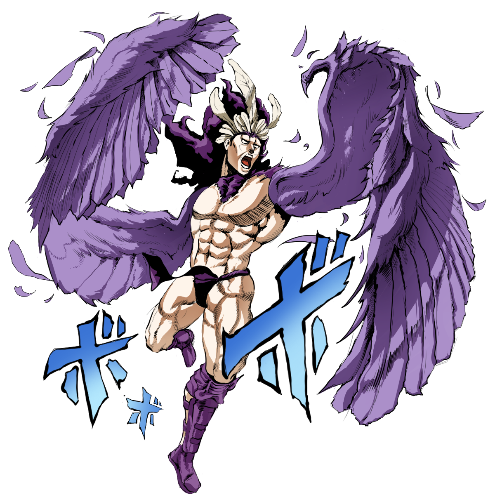

'전투 조류'란?
전투조류는 만화 죠죠의 기묘한 모험의 2번째 이야기이다. 전투조류의 배경은 1부 팬텀 블러드로부터 약 50년 정도 후인, 1930년대이다.
약 2000년전 파문사를 멸망시킨 존재, 기둥속 사내가 1938년 깨어난다. 그리고 죠셉은 죠나단 죠스타때부터 내려온 석가면과의 연을 석가면의 제작자 카즈를 죽임으로써 끝내려한다.
전투조류는 만화 죠죠의 기묘한 모험의 2번째 이야기이다. 전투조류의 배경은 1부 팬텀 블러드로부터 약 50년 정도 후인, 1930년대이다.
약 2000년전 파문사를 멸망시킨 존재, 기둥속 사내가 1938년 깨어난다. 그리고 죠셉은 죠나단 죠스타때부터 내려온 석가면과의 연을 석가면의 제작자 카즈를 죽임으로써 끝내려한다.